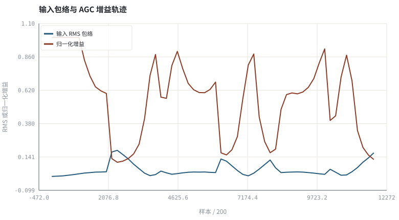
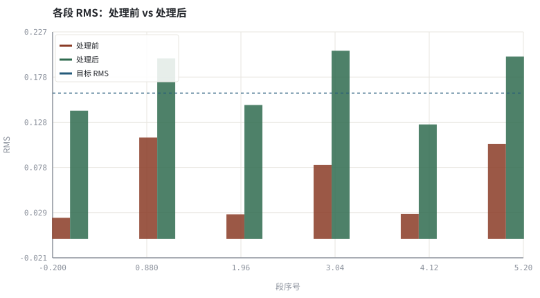

第 14 章AGC：包络跟踪、攻击释放、限幅与响度
AGC 不改内容只改尺度，却是 3A 里最容易破坏评测、也最容易被听出来的模块。
本章位置：第 12 章 · 谱减、过减因子与音乐噪声 与 第 13 章 · Wiener 滤波、先验 SNR 与 MMSE-STSA 改的是频谱内容，本章只改整体尺度；第 16 章 · 3A 级联顺序与模块间相互干扰 用定量实验说明它必须排在最后，第 25 章 · 神经增益控制与感知响度 讨论可学习的增益律。
AGC 是带状态的比例控制器：g = target/measured，攻击/释放是两个不同的低通系数，与限流器、自动扩缩容同属反馈环路。
- 能区分峰值电平、RMS 电平与响度三种「大小」的定义。
- 能实现带攻击/释放的 AGC 增益环路并解释增益泵浦。
- 能说明为什么 AGC 必须放在 AEC 与 ANS 之后。
- 能解释 AGC 之后评测必须做尺度对齐。
§知识点地图
每个知识点都配了 1～2 个扩展学习链接；本章完整资源清单见 扩展学习。
| # | 知识点 | 扩展学习 | 状态 |
|---|---|---|---|
| 1 | 峰值与 RMS 电平 | Automatic gain control ↗ · ffmpeg loudnorm ↗ | 正文已覆盖 |
| 2 | 响度与 LUFS | EBU R128 ↗ · ffmpeg loudnorm ↗ | 正文已覆盖 |
| 3 | 包络跟踪 | Automatic gain control ↗ · ffmpeg loudnorm ↗ | 正文已覆盖 |
| 4 | 攻击时间与释放时间 | Automatic gain control ↗ · ffmpeg loudnorm ↗ | 正文已覆盖 |
| 5 | 增益泵浦 | Automatic gain control ↗ · ffmpeg dynaudnorm ↗ | 正文已覆盖 |
| 6 | 限幅与真峰值 | ffmpeg alimiter ↗ · ffmpeg acompressor ↗ | 正文已覆盖 |
| 7 | 静态增益与动态增益 | Automatic gain control ↗ · ffmpeg dynaudnorm ↗ | 正文已覆盖 |
| 8 | 尺度对齐 | Automatic gain control ↗ · ffmpeg loudnorm ↗ | 正文已覆盖 |
§14.1三种「大小」，三种控制目标
g[t] = L_target / L̂[t] ，L̂[t] = (1−a)·L̂[t−1] + a·|x[t]| （上升慢、下降快）
| 量 | 定义 | 反应速度 | 典型用途 |
|---|---|---|---|
| 峰值 | max |x[n]| | 瞬时 | 防削波，配 alimiter |
| RMS | √(mean x²) | 20–400 ms 窗 | 传统 AGC 的主控制量 |
| 响度 LUFS | K 加权 + 门控（BS.1770） | 400 ms～整段 | 广播/流媒体合规 |
传统 AGC 用 RMS 包络做反馈控制：电平低就慢慢抬增益（释放），电平突然变高就快速压增益（攻击），避免削波。注意「攻击/释放」是相对增益而言：增益下降要快，增益上升要慢。
§14.2增益泵浦、限幅与顺序约束
静音段没有语音，包络降到噪声底，AGC 会把增益一路抬到上限；下一句语音进来，噪声被一起放大，随后增益又被压下去——这种背景噪声随语音起伏的现象叫增益泵浦（pumping）。工程上用最大增益钳位、静音段冻结增益（配合 VAD）与输出端限幅器来约束它。
- 限幅：
clip()是硬削波，会产生谐波；生产用带前瞻的软限幅。 - 真峰值：采样点峰值不等于重建后的模拟峰值，广播按 ITU-R BS.1770 测 True Peak。
- 尺度对齐：第 03 章 · 怎么算「变好了」：客观指标、尺度与主观听测 已证明，AGC 后直接用干净参考相减会把增益差误判为噪声。
AGC 若放在 AEC 之前，麦克风信号被整体缩放而远端参考没有，线性卷积关系被破坏，自适应滤波器会去追一个不存在的 h。推荐顺序永远是 AEC → ANS → AGC，第 16 章 · 3A 级联顺序与模块间相互干扰 给出定量对照。
§Python 实验
实验 14-1 · 电平跳变下的 AGC 环路、泵浦与限幅
#!/usr/bin/env python3
# -*- coding: utf-8 -*-
"""合成强弱交替的语音段，实现带攻击/释放的 AGC，测量分段 RMS、增益起伏与钳位计数。
全部语音 / 噪声 / 房间冲激响应均为代码合成信号，仅用于教学演示机制与量级。
"""
from __future__ import annotations
import math
import pathlib
import random
import statistics
import sys
import time
_here = pathlib.Path(__file__).resolve()
for _p in _here.parents:
if (_p / "tools" / "dsp.py").exists():
sys.path.insert(0, str(_p / "tools"))
break
from dsp import (SAMPLE_RATE, fft, hann, stft, istft, magnitude_db, spectrum,
white_noise, tone, chirp, synthetic_speech, rir, convolve,
fft_convolve, delay, clip, normalize_peak, rms, rolling_rms,
smooth, db, energy_db, snr_db, erle_db, seg_snr_db,
scale_align, si_sdr_db, lufs_approx,
write_wav, read_wav, wav_info)
from chart import Chart, heatmap, BLUE, RED, GREEN, AMBER
FIG = _here.parents[1] / "fig"
AUDIO = _here.parents[1] / "audio"
FIG.mkdir(exist_ok=True)
AUDIO.mkdir(exist_ok=True)
random.seed(7)
# ---- 参数区 ----
N = 12000
SEG = 2000
TARGET = 0.16
MAX_GAIN = 8.0
ATTACK = 0.004
RELEASE = 0.030
# ---- 计算与作图 ----
rng = random.Random(7)
base = synthetic_speech(rng, N)
noise = white_noise(rng, N, 0.002)
level = [0.15 if (i // SEG) % 2 == 0 else 1.0 for i in range(N)]
x = [base[i] * level[i] + noise[i] for i in range(N)]
env = rolling_rms(x, 256)
raw_g = [min(MAX_GAIN, TARGET / (e + 1e-4)) for e in env]
g = smooth(raw_g, ATTACK, RELEASE)
out = clip([x[i] * g[i] for i in range(N)])
before = [rms(x[s:s + SEG]) for s in range(0, N, SEG)]
after = [rms(out[s:s + SEG]) for s in range(0, N, SEG)]
clipped = sum(1 for v in out if abs(v) >= 0.999)
c = Chart(FIG / "14-agc.svg", "输入包络与 AGC 增益轨迹", xlabel="样本 / 200", ylabel="RMS 或归一化增益")
c.line(range(0, N, 200), [env[i] for i in range(0, N, 200)], BLUE, label="输入 RMS 包络")
c.line(range(0, N, 200), [g[i] / MAX_GAIN for i in range(0, N, 200)], RED, label="归一化增益")
print("包络图:", c.save())
b = Chart(FIG / "14-levels.svg", "各段 RMS：处理前 vs 处理后", xlabel="段序号", ylabel="RMS")
b.bars(range(len(before)), before, RED, label="处理前")
b.bars(range(len(after)), after, GREEN, label="处理后")
b.hline(TARGET, BLUE, label="目标 RMS")
print("电平图:", b.save())
write_wav(AUDIO / "14-before.wav", normalize_peak(x))
write_wav(AUDIO / "14-after.wav", out)
print("分段 RMS 前: " + " ".join("%.3f" % v for v in before))
print("分段 RMS 后: " + " ".join("%.3f" % v for v in after))
print("LUFS近似 %.1f -> %.1f | 增益 %.2f~%.2f | 钳位 %d | SAMPLE_RATE=%d" %
(lufs_approx(x), lufs_approx(out), min(g), max(g), clipped, SAMPLE_RATE))操作：试听两个 WAV，观察处理后各段 RMS 是否收敛到 TARGET。 预期与判读：处理后各段 RMS 明显更接近目标值；增益在电平跳变处快速下降、缓慢回升。弱段的底噪被一起放大，这就是增益泵浦；输出峰值被限幅约束。
改参数看趋势：把 ATTACK 与 RELEASE 对调，观察增益过冲与削波样本数上升。 文件位置：part2/14-agc/code/14-agc.py


14-before.wav
强弱交替的输入，需要手动调音量（16 kHz / 16-bit 单声道，代码合成信号，不是真实录音）
14-after.wav
AGC 输出：整体等响，注意弱段噪声被抬起（16 kHz / 16-bit 单声道，代码合成信号，不是真实录音）
代码块右上角可一键复制；仓库里的 code/*.py 由 tools/extract_code.py 从这些代码块自动抽取。脚本只用标准库、固定 random.seed(7)，运行后写出 fig/*.svg 与 audio/*.wav；批量运行用 ./tools/run_python.sh。
§可选真机命令片段
以下命令不参与批量运行，需要本机自行安装对应工具。滤镜是否可用取决于本机 ffmpeg 版本与编译选项，请先用 ffmpeg -filters / ffmpeg -version 自查，并以 https://ffmpeg.org/ffmpeg-filters.html 与各自官方文档为准；本书不假定任何特定版本具备某项能力。
用 ffmpeg 做电平与响度核对
ffmpeg -hide_banner -i out.wav -af volumedetect -f null - 2>&1 | grep mean_volume说明：volumedetect 给出 mean_volume / max_volume；更完整的响度测量用 ebur128，动态归一化用 dynaudnorm、语音归一化用 speechnorm，均应以本机 `ffmpeg -filters` 与 https://ffmpeg.org/ffmpeg-filters.html 为准。
用 ffmpeg 做一次 EBU R128 响度归一化
ffmpeg -hide_banner -i out.wav -af loudnorm=I=-23:TP=-2:LRA=7 norm.wav说明：loudnorm 的目标响度 I、真峰值 TP、响度范围 LRA 与 EBU R128 / ITU-R BS.1770 对应；商业链路常用 two-pass，参数以官方文档为准。
§本章参考资料
按本章知识点挑选的精读资料；更多检索入口见 扩展学习。
§常见误区
- 把 AGC 放在 AEC 之前，破坏参考与回声的线性关系。
- 增益上升过快，静音段底噪被抬起形成泵浦。
- 用硬削波代替限幅，引入明显谐波失真。
- AGC 后不做尺度对齐就报告 SNR 提升。
§习题与思考
- 推导一阶包络器的时间常数与系数 a 的关系。
- 解释为什么「增益下降快、上升慢」而非相反。
- 设计一个 VAD 冻结增益的策略，并说明它带来的新风险。
§扩展学习
继续检索
- Google Scholar：automatic gain control EBU R128 limiter ↗
- arXiv：automatic gain control EBU R128 limiter ↗
- GitHub：automatic gain control EBU R128 limiter ↗
全书链接总表见 FFmpeg Filters 文档 ↗ 与 附录 A.7；滤镜是否可用请以本机 ffmpeg -filters 为准。
§延伸阅读与内链
- 第 03 章 · 怎么算「变好了」：客观指标、尺度与主观听测 尺度对齐；第 16 章 · 3A 级联顺序与模块间相互干扰 级联顺序；第 25 章 · 神经增益控制与感知响度 神经增益控制。